1. Introducción
Islandia es uno de los destinos más impresionantes del mundo para recorrer por libre. Volcanes, glaciares, cascadas gigantes y paisajes salvajes hacen que cada kilómetro de la carretera sea espectacular.
Una de las mejores formas de viajar por Islandia es alquilando una campervan y durmiendo en campings. De esta forma puedes recorrer la famosa Ring Road, el Golden Circle o la Costa Sur con total libertad y despertarte cada día en un lugar diferente rodeado de naturaleza.
3. 🏨 Dónde alojarse
Reikiavik
La capital de Islandia es el punto de inicio de la mayoría de rutas por el país.
Campervan y campings
Una de las mejores formas de viajar por Islandia es alquilando una campervan y dormir en campings repartidos por toda la isla.
¿Cuál es la mejor opción?
En mi caso decidí alquilar una campervan para recorrer el Círculo Dorado y la Costa Sur durante una semana. Esto me permitió moverme con libertad y dormir en diferentes campings cerca de los lugares que quería visitar. Es una experiencia increíble, que aconsejo hacer al menos una vez en la vida. A continuación os dejo el enlace de la página donde alquilé la furgoneta.
Ver alquiler de campervan4. 🚐 Campings donde dormir
En este apartado os dejo algunos de los campings en los que me alojé durante mi viaje por Islandia. Viajar en campervan o furgoneta camper es una de las mejores formas de recorrer el país, ya que te permite moverte con total libertad y adaptar la ruta cada día según el clima, las distancias o los lugares que quieras visitar.
Más adelante, en el punto 6, os recomendaré una aplicación muy útil que muestra todos los campings cercanos a tu ubicación en tiempo real. Gracias a esta herramienta resulta muy fácil encontrar dónde dormir cada noche mientras recorres la isla.
En mi caso, esta aplicación me dio la flexibilidad de dormir cada día en un lugar diferente, normalmente cerca de los puntos que tenía previstos visitar al día siguiente. De esta forma pude optimizar mucho mejor el tiempo del viaje y evitar trayectos largos a primera hora de la mañana.
Además, en muchos campings de Islandia no es necesario reservar con antelación, especialmente fuera de la temporada más alta. Simplemente puedes llegar, registrarte en recepción o pagar en una máquina automática y pasar la noche allí. Esto hace que viajar en camper por Islandia sea una experiencia muy cómoda, flexible y perfecta para quienes disfrutan improvisando durante el viaje.
Aquí os dejo los campings:
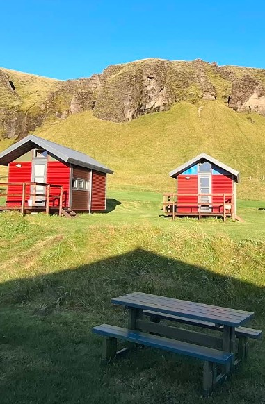
1. 🚐 Tjaldstæðið Kirkjubær II, cottages and camping
Esta remota propiedad rural con cabañas y camping se encuentra a 1 km de la cascada Systrafoss y a 10 km del cañón prehistórico del río Fjaðrárgljúfur.
Los servicios compartidos incluyen baño, cocina, comedor y lavandería. Dispone de una zona de acampada para tiendas de campaña y autocaravanas. El precio es de 16€ por persona y noche.
Ver camping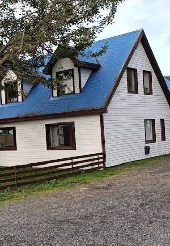
2. ⛺2.5Smáratún Farmhouse Cottages & Chalets
Para mi fué el mejor camping de todos. Es pequeño pero no le falta de nada. Al llegar habia dos campers más. Poca gente, era un camping tranquilo.
Los servicios compartidos incluyen baño, cocina, comedor y lavandería. Dispone de una zona de acampada para tiendas de campaña y autocaravanas. El precio es de 14€ por persona y noche.
Ver camping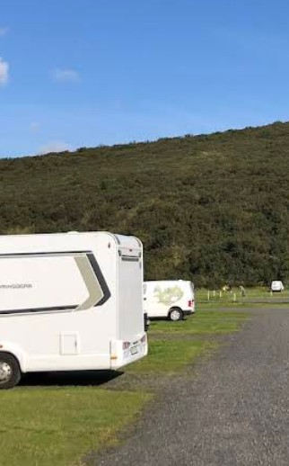
3. 🚗 Skaftafell camping
El camping está en pleno parque natural de Skaftafell, las vistas y los paseos son espectaculares. Es espacioso, los aseos y duchas están limpios y bastante nuevos. La lavadora es gratuita. El único pero es que no tiene espacio de cocina.
Esta muy bien situado, cerca del glaciar Vatnajökull. Hacen excursiones al glaciar desde el camping.
Ver camping5. 📱 Aplicaciones imprescindibles para Islandia
Descárgate estas aplicaciones antes de viajar a Islandia. Te ayudarán a encontrar campings, cazar auroras y planificar tu ruta.
⛺ Park4Night 📲 App imprescindible
🌌 Hello Aurora 📲 App imprescindible
🌠 Aurora Forecast 📲 App imprescindible
🌦️ Vedur 📲 App imprescindible
6. ❄ Qué visitar en Islandia
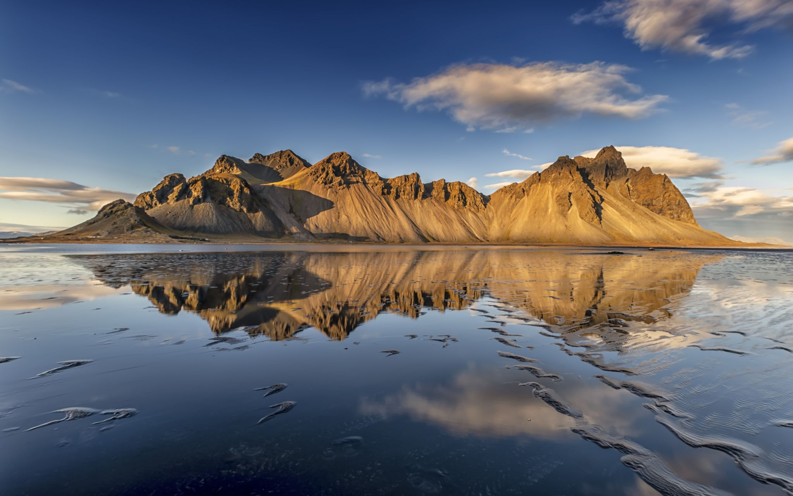
1. Verstrahorn
Vestrahorn es una de las montañas más fotogénicas de Islandia, situada en la península de Stokksnes, al sureste del país. Sus picos afilados y escarpados se elevan de forma impresionante frente al océano Atlántico, creando un paisaje dramático y único. La combinación de la montaña, el mar y la arena negra volcánica convierte este lugar en uno de los rincones más icónicos de Islandia.
Uno de sus mayores atractivos es el reflejo de la montaña en la arena mojada de la playa, especialmente durante la marea baja. Es un lugar muy popular entre fotógrafos, sobre todo al amanecer y al atardecer, cuando la luz crea contrastes espectaculares. Además, la zona cuenta con dunas cubiertas de vegetación que añaden aún más belleza al paisaje.
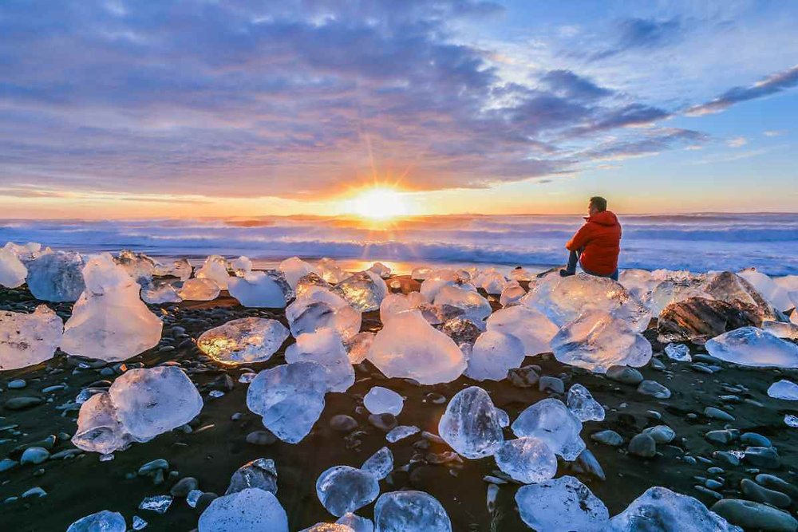
2. Diamond-beach
Diamond Beach es una impresionante playa de arena negra situada junto a la famosa laguna glaciar Jökulsárlón. Lo que hace único este lugar es la presencia de bloques de hielo que se desprenden del glaciar y llegan hasta la orilla arrastrados por el mar.
Estos fragmentos de hielo, de diferentes tamaños y formas, brillan bajo la luz del sol como si fueran diamantes, creando un contraste espectacular con la arena oscura. El sonido del hielo moviéndose con las olas y el entorno salvaje hacen que la experiencia sea inolvidable. Es uno de los lugares más mágicos y fotografiados de Islandia.
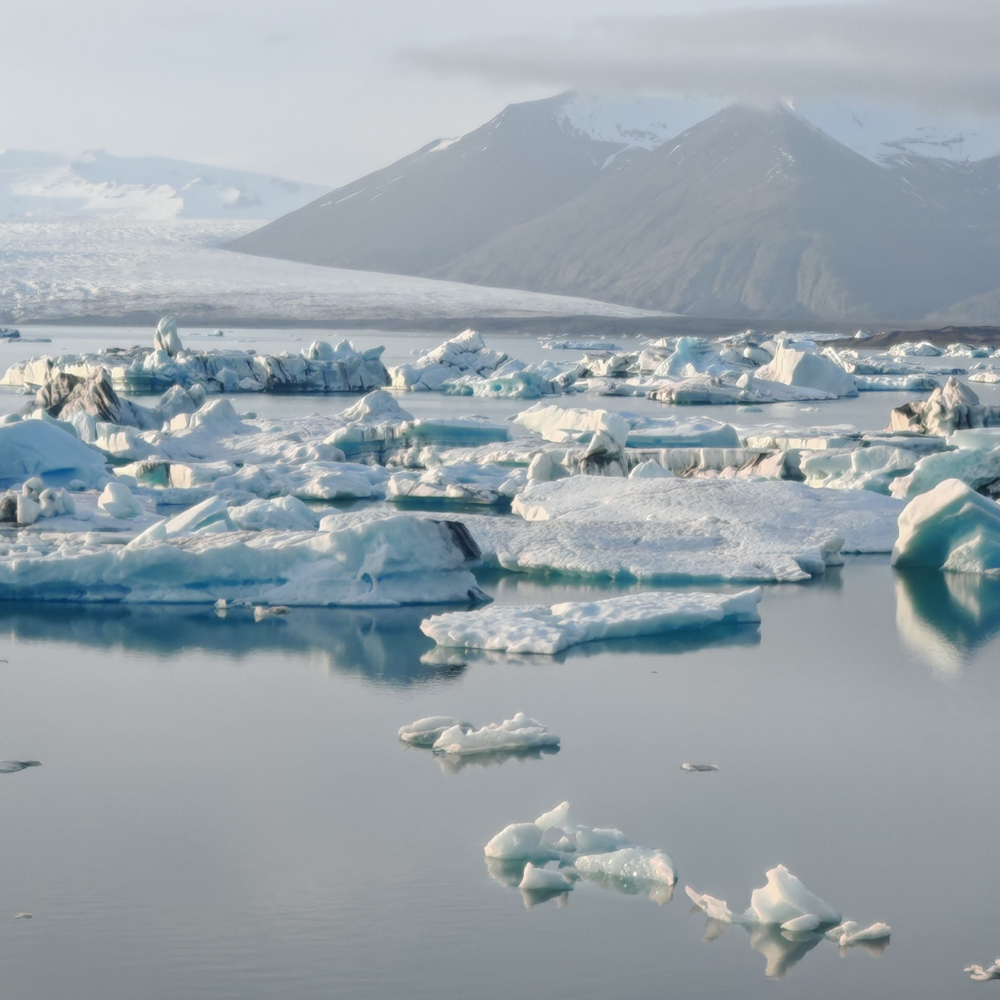
3. Glaciar Vatnajökull
Fjallsárlón es una impresionante laguna glaciar situada dentro del Parque Nacional Vatnajökull, el mayor glaciar de Europa. En esta laguna flotan enormes bloques de hielo que se desprenden del glaciar Fjallsjökull, creando un paisaje espectacular y en constante cambio.
A diferencia de la cercana Jökulsárlón, Fjallsárlón es un lugar mucho más tranquilo y menos concurrido, lo que permite disfrutar del entorno con mayor calma. Desde aquí se pueden observar de cerca las formaciones de hielo y la inmensidad del glaciar. Es un lugar perfecto para quienes buscan una experiencia más íntima con la naturaleza.
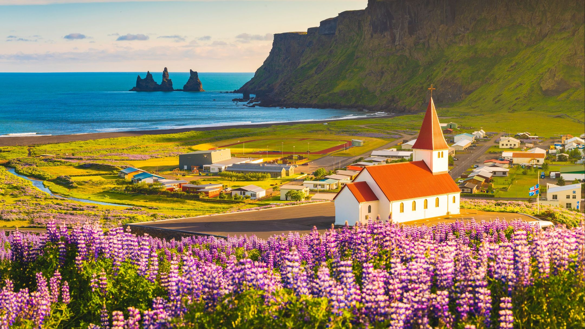
4. Vik
Vík es un pequeño pueblo costero situado en el sur de Islandia y uno de los destinos más visitados del país. A pesar de su tamaño, es un punto clave para explorar la costa sur, gracias a su ubicación estratégica.
Es famoso por sus playas de arena negra, especialmente Reynisfjara, y por los acantilados donde anidan numerosas aves marinas como los frailecillos. Desde la iglesia situada en lo alto del pueblo se obtienen unas vistas panorámicas espectaculares. Vík combina paisajes naturales impresionantes con un ambiente tranquilo y acogedor.

5. Svartifoss
Svartifoss es una de las cascadas más singulares de Islandia, conocida por las columnas de basalto negro que la rodean. Estas formaciones geométricas se originaron por la actividad volcánica y crean un marco natural único alrededor de la cascada.
Se encuentra dentro del Parque Nacional Vatnajökull y para llegar hasta ella es necesario realizar una caminata de unos 30-40 minutos. El recorrido es muy agradable y ofrece vistas de otras cascadas y paisajes naturales. Su belleza y su peculiar entorno la convierten en una de las cascadas más especiales del país.
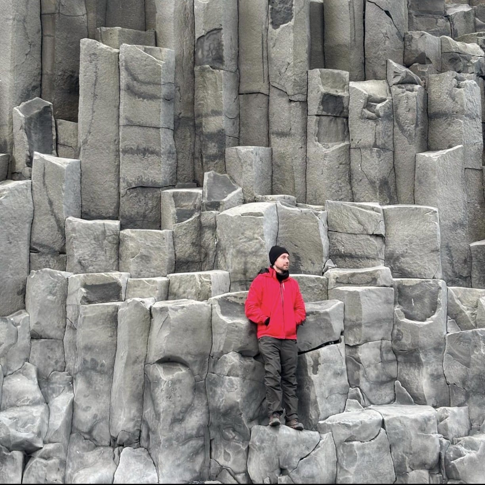
6. Black sand beach
Reynisfjara es una de las playas de arena negra más famosas de Islandia y uno de los lugares más impactantes del país. Sus enormes columnas de basalto, perfectamente formadas, crean una especie de muro natural que impresiona a cualquier visitante.
Frente a la costa se encuentran las formaciones rocosas de Reynisdrangar, que emergen del mar y están rodeadas de leyendas locales. El contraste entre el océano, la arena negra y los acantilados es espectacular. Es importante tener precaución con las olas, ya que pueden ser muy peligrosas.
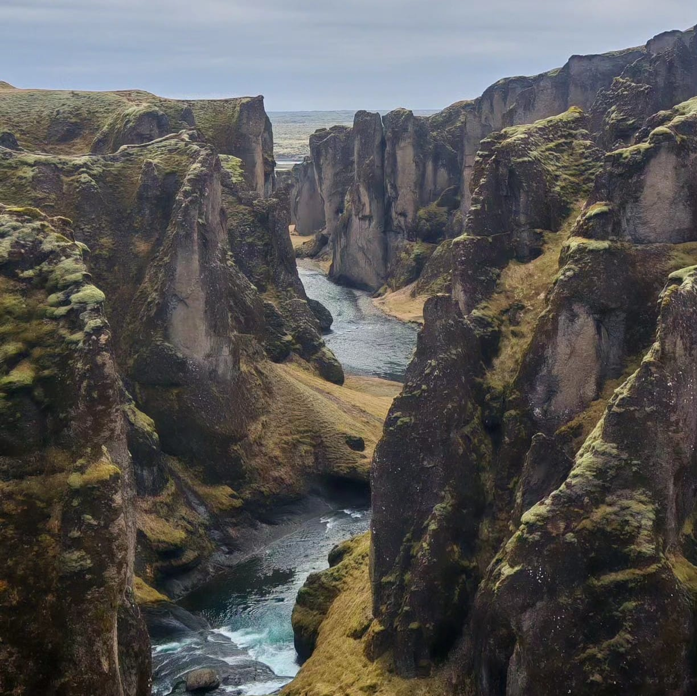
7. Cañon de Fjaðrárgljúfur
Fjaðrárgljúfur es un impresionante cañón de unos dos kilómetros de longitud formado por la erosión del río Fjaðrá a lo largo de miles de años. Sus paredes, cubiertas de musgo verde, crean un paisaje muy llamativo y diferente a otros lugares de Islandia.
A lo largo del cañón hay varios miradores desde los que se pueden disfrutar vistas espectaculares. Es un lugar ideal para pasear tranquilamente y hacer fotografías. Su belleza natural lo ha convertido en uno de los destinos más populares del sur del país.
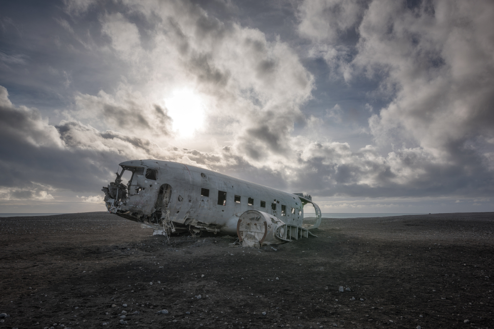
8. Avión en Sólheimasandur
En la playa de Sólheimasandur se encuentra el famoso avión abandonado de un accidente ocurrido en 1973. El fuselaje del avión DC-3 descansa sobre una vasta llanura de arena negra, creando un paisaje surrealista y muy impactante.
Para llegar hasta el avión es necesario caminar unos 45 minutos desde el aparcamiento, lo que añade un toque de aventura a la visita. El contraste entre el blanco del avión y el entorno oscuro lo convierte en uno de los lugares más fotografiados de Islandia. Es una parada única y diferente.
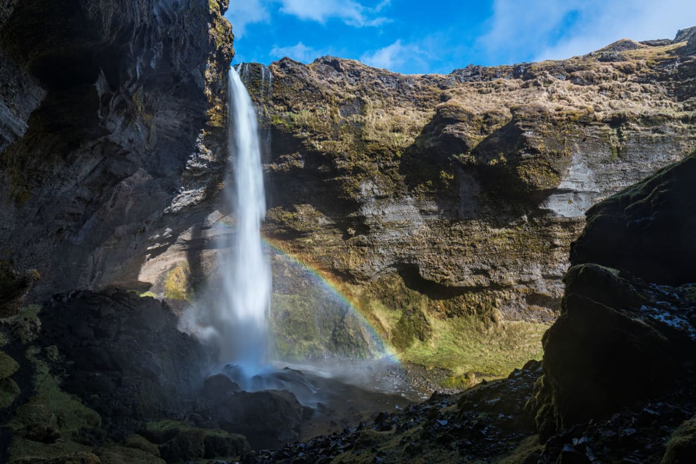
9. Kvernufoss
Kvernufoss es una hermosa cascada situada cerca de Skógafoss, pero mucho menos conocida y visitada. Su entorno es más tranquilo, lo que permite disfrutar de la naturaleza sin grandes multitudes.
Lo más especial de esta cascada es que se puede caminar por detrás de la caída de agua, entrando en una pequeña cueva desde donde se obtiene una perspectiva única. El sonido del agua y el entorno natural crean una atmósfera muy especial. Es una joya escondida en el sur de Islandia.
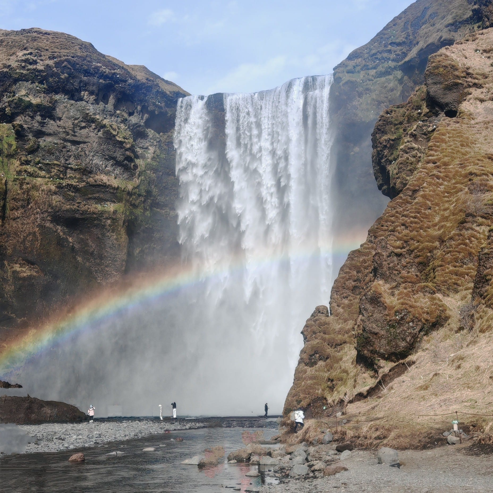
10. skogafoss
Skógafoss es una de las cascadas más grandes e impresionantes de Islandia, con una caída de unos 60 metros de altura. El agua cae con gran fuerza formando una cortina espectacular que genera una gran cantidad de vapor.
En los días soleados es muy común ver arcoíris en la base de la cascada, lo que la hace aún más espectacular. También es posible subir por unas escaleras hasta la parte superior para disfrutar de vistas panorámicas. Es una de las cascadas más visitadas del país.

11. Seljalandsfoss
Seljalandsfoss es una de las cascadas más famosas de Islandia, conocida por la posibilidad de caminar por detrás de la caída de agua. Esta experiencia permite disfrutar de una perspectiva completamente diferente y única del paisaje.
El sendero que rodea la cascada ofrece vistas increíbles, especialmente al atardecer, cuando la luz crea efectos mágicos. Es recomendable llevar ropa impermeable, ya que es fácil mojarse. Es una de las visitas imprescindibles en la costa sur.
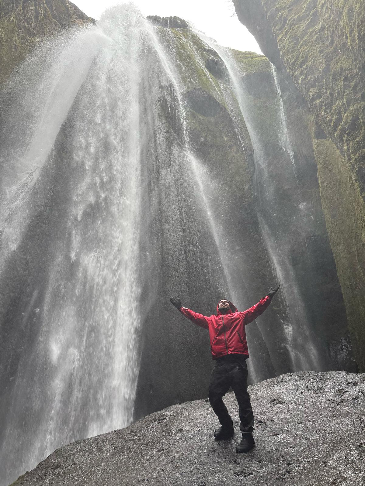
12. Gljufrabui
Gljúfrabúi es una cascada escondida muy cerca de Seljalandsfoss que muchos visitantes pasan por alto. Se encuentra dentro de una pequeña cueva, lo que la hace aún más especial y misteriosa.
Para verla hay que caminar entre rocas y atravesar un pequeño arroyo, lo que añade un toque de aventura. Al entrar en la cueva, la vista de la cascada es espectacular. Es un lugar menos turístico pero muy mágico.
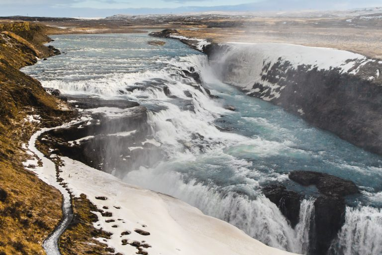
13. Gullfoss
Gullfoss, conocida como la “cascada dorada”, es una de las más impresionantes de Islandia y una de las principales atracciones del Círculo Dorado. El río Hvítá cae en dos grandes saltos dentro de un profundo cañón.
La fuerza del agua y el paisaje que la rodea crean un espectáculo natural impresionante. Dependiendo de la luz, el agua puede parecer dorada, de ahí su nombre. Es un lugar imprescindible en cualquier ruta por Islandia.

14. Kerio
Kerið es un cráter volcánico lleno de agua que forma un pequeño lago de color azul intenso. El contraste entre las paredes rojizas del cráter y el agua crea un paisaje muy llamativo y diferente.
Se puede caminar por el borde del cráter o descender hasta la orilla del lago. Es una parada rápida pero muy interesante dentro del recorrido del Círculo Dorado. Su forma casi perfecta lo convierte en un lugar muy fotogénico.
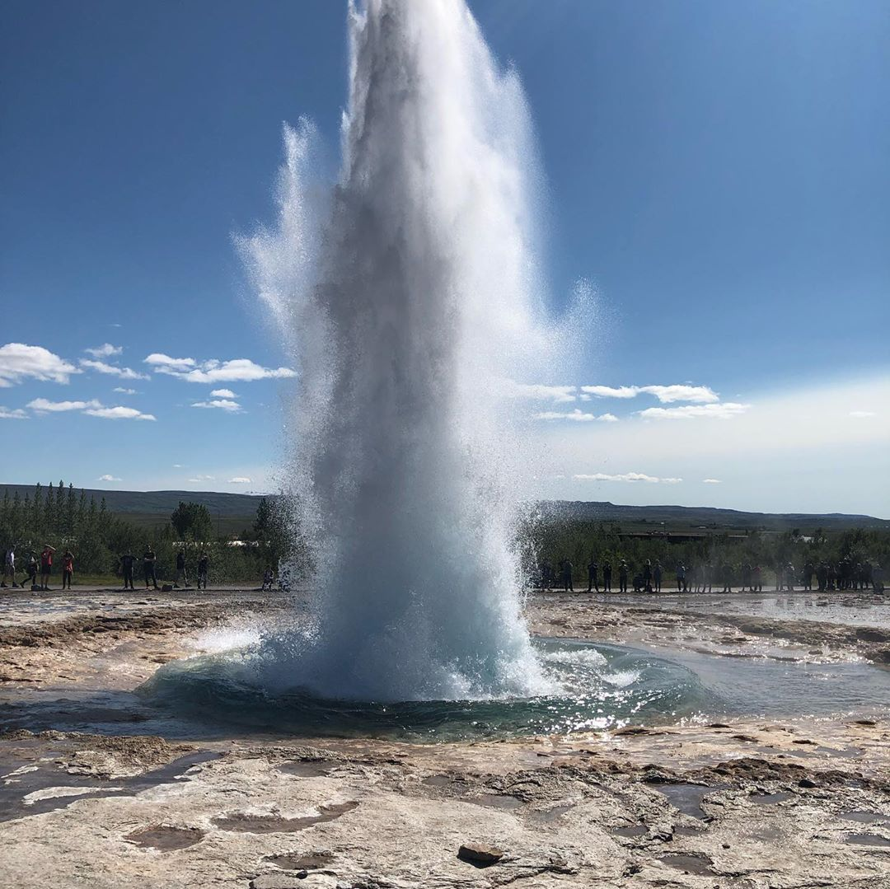
15. Geyser
El área geotérmica de Geysir es uno de los lugares más famosos de Islandia. Aquí se encuentra el géiser Strokkur, que entra en erupción cada pocos minutos, lanzando agua caliente a más de 20 metros de altura.
El entorno está lleno de fumarolas, aguas termales y formaciones geotérmicas que muestran la actividad volcánica de la zona. Es un espectáculo natural impresionante y una parada imprescindible en el Círculo Dorado.
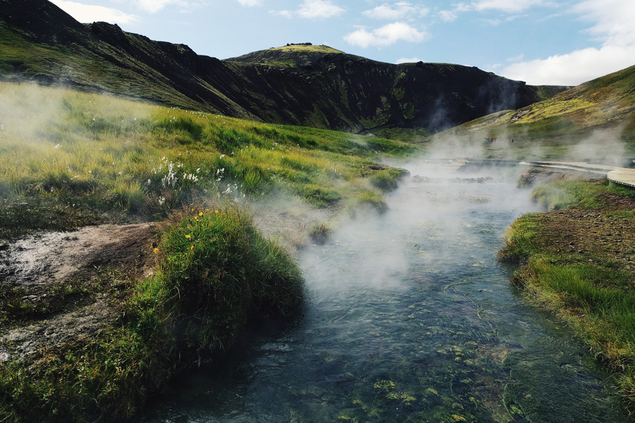
16. Reykjadalur Hot Spring Thermal River
Reykjadalur es un valle geotérmico situado cerca de Reikiavik donde la naturaleza volcánica se muestra en todo su esplendor. Tras una caminata de unos 45 minutos, se llega a un río de agua caliente donde es posible bañarse.
El recorrido atraviesa montañas, fumarolas y paisajes únicos. Bañarse en el río rodeado de naturaleza es una experiencia muy relajante. Es una de las actividades más especiales cerca de la capital.
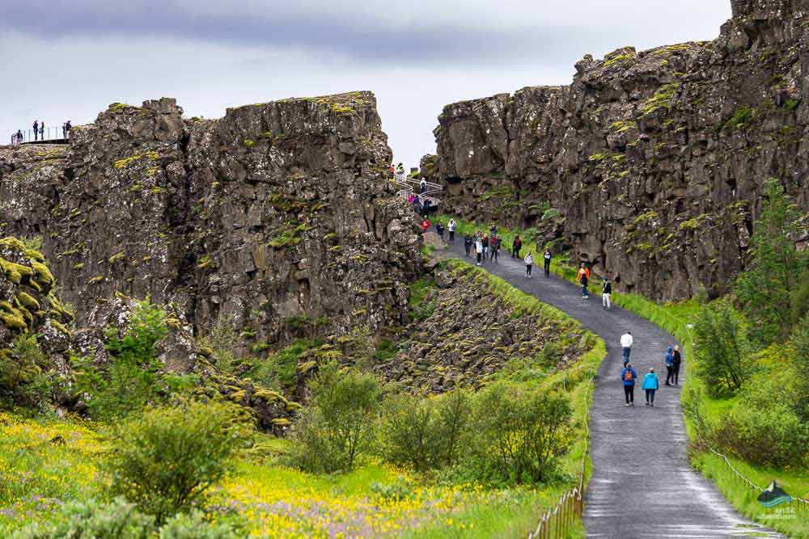
17. Thingvellir
Þingvellir es un parque nacional declarado Patrimonio de la Humanidad por la UNESCO y uno de los lugares más importantes de Islandia. Aquí se encuentra la separación entre las placas tectónicas de América y Europa, visible a simple vista.
Además de su importancia geológica, es un lugar histórico, ya que aquí se estableció el primer parlamento islandés en el año 930. El paisaje combina lagos, fallas geológicas y naturaleza salvaje. Es una parada imprescindible en el Círculo Dorado.
8. 🍽️ Qué comer en Islandia
🐑 Kjötsúpa 🇮🇸 Islandia
🍞 Rúgbrauð 🇮🇸 Islandia
🐟 Plokkfiskur 🇮🇸 Islandia
🌭 Pylsa 🇮🇸 Islandia
🍦 Skyr 🇮🇸 Islandia
🦈 Hákarl 🇮🇸 Islandia
🍰 Kleinur 🇮🇸 Islandia
Comer en Islandia es caro. Un plato principal en un restaurante normal cuesta entre 25-40€. Para ahorrar, te recomiendo comprar en supermercados como Bónus (el del cerdito rosa) o Krónan, donde encontrarás comida a precios razonables. También puedes llevar snacks y comida de casa si viajas con la maleta facturada.
🛒 Dónde probar comida local sin arruinarte: Los food trucks y puestos callejeros tienen precios más bajos. El famoso Bæjarins Beztu Pylsur (el mejor hot dog de Reikjavik) cuesta unos 4€ y es una institución desde 1937.
💧 Agua del grifo: El agua de Islandia es de las más puras del mundo. No compres agua embotellada, llénala directamente del grifo (es gratis y deliciosa).


{kind=link}
{kind=link}
{kind=link}
{kind=link}
{kind=link}
{kind=link}
{kind=link}
{kind=link}
{kind=link}
{kind=link}
{kind=link}
{kind=link}
{kind=link}
{kind=link}
{kind=link}
{kind=link}